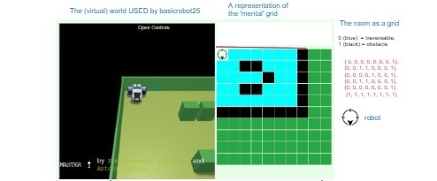
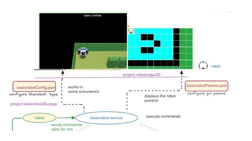

Nella directory del progetto basicrobot25usage, eseguire:
docker-compose -f basicrobot26.yaml up |
Attivazione dei servizi necessari (Mosquiito, etc,), del virtual envirnoment (wnev), del basicrobot e della rappresentazione della 'immagine mentale dell'ambiente' |
Aprendo un browser web all'indirizzo localhost:8075 si dovrebbe vedere la seguente schermata

Il basicrobot25 si presenta come un servizio:

Questa versione non usa Eureka per la resgitrazion e il discovery dei servizi.
| Program | Description |
|---|---|
| main.java.BasicroboCallerCoap.java | Esempio di interazione diretta via CoAP |
| main.java.BasicroboCallerMqtt.java | Esempio di interazione diretta via Mqtt Il programma funge anche da obseerver delle informazioni emesse dal basicrobot sulla topic ... |
| Program | Description |
|---|---|
| main.java.BasicRobotMovesHelper.java | Classe che contiene la defnizione di alcune macro-mosse per il basicrobot, tra cui:
|
| main.java.caller.BasicroboCallerTcpWithHelper.java | Programma che presenta un menu di azioni eseguibili da parte del basicrobot, ciascuna realizzata tramite le macro-mosse definite in BasicRobotMovesHelper. Il programma si connette al robot tramite protocollo TCP, conoscendo il suo indirizzo IP. |